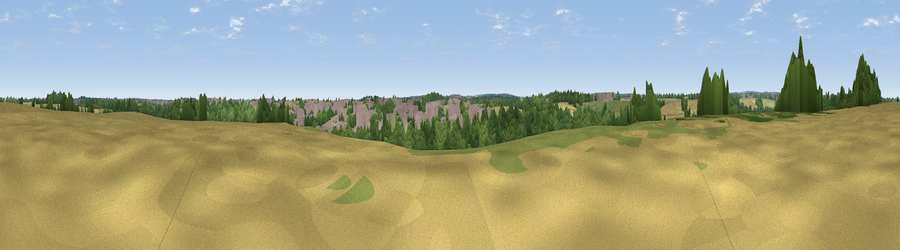

Viewpoint near Choppington
#43968 in England · top 94% of its area beats it · near Choppington · access?Where it is
The exact computed spot (NZ 24975 85775). Click the marker for map links.
Public access: no public right of way or access land is recorded at this exact spot — it may be on private land. Computed from Natural England's CRoW access layer and OpenStreetMap rights of way — not the legal definitive map. Always verify locally.
The view, rendered

A 360° render of this exact spot computed from the terrain model, tree cover and land cover — summer colours, afternoon light, calibrated against photographs of famous viewpoints. Real trees, hedges and buildings will differ in detail.
The panorama
Grey silhouette: terrain skyline in each direction (720 bearings, Earth curvature and refraction included). Dashed green: skyline with trees (+15 m) and buildings (+8 m) as obstacles. Blue strip: how far the ground is visible on each bearing.
Where the view opens
Wedge length = distance to the farthest visible ground on that bearing (vegetation-aware). Rings at 10, 25 and 50 km.
What fills the view
37% woodland · 25% cropland · 20% grassland · 18% built-up
Angular shares of the visible panorama (visual magnitude), not map area. Landscape diversity 0.59 (0–1 Shannon).
Key numbers
More beautiful places nearby
The staircase of upgrades: each row has a higher view potential than everything closer. Driving times are estimates from straight-line distance, calibrated against real road routing — check an actual route before setting out.
| Place | Direction | Drive | Score |
|---|---|---|---|
| Colliers Hill | NW · 3 km | ~7 min | 33.0 |
| Isabella Heap | SE · 7 km | ~14 min | 40.9 |
| Nelson Hill | S · 8 km | ~16 min | 52.9 |
| Northumberlandia viewpoint | S · 9 km | ~17 min | 68.7 |
| Viewpoint near Longframlington | NW · 22 km | ~36 min | 72.1 |
| Viewpoint near Longframlington | NW · 22 km | ~37 min | 73.2 |
| Viewpoint near Longframlington | NW · 22 km | ~37 min | 79.5 |
| Viewpoint near Rothbury | WNW · 24 km | ~39 min | 81.1 |
55.16567, -1.60951 · source: screening · position refined by local search. Computed location — check access rights before visiting.